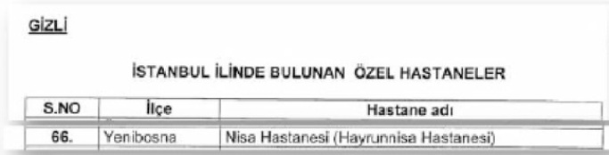

1. Giriş
Balyoz davası, basında yansıtıldığı gibi Baransu’ya teslim edilen bavuldan çıkan "5000 sayfa belge" üzerine inşa edilmedi. Balyoz iddianamesini okuyan herkesin kolaylıkla görebileceği gibi, Balyoz davasının esasını 3 adet CD (hatta 1 adet CD) oluşturuyor.
Balyoz bavulundan nelerin çıktığı Balyoz iddianamesinde açıkça listeleniyor (sayfa 42):
|
Mehmet BARANSU tarafından teslim edilen FAITH ibareli valiz Başsavcılığımızın 208 nolu duruşma salonunda usulüne uygun olarak açılmış, valizden görevliler tarafından numaralandırılan toplam 2229 sayfa döküman, 19 adet CD ve 10 adet teyp kaseti çıktığı tespit edilerek teknik cihazlar ile kayıt altın alınmış ve valiz içerisinde olduğu tespit edilen döküman, CD ve kasetler üzerinde Kimlik Tespit ve Olay Yeri İnceleme Şube Müdürlüğü görevlilerince ilk inceleme yapılmış ve bu malzemelere el konulmuştur. |
Demek ki, Baransu’ya kimin teslim ettiği bilinmeyen bavuldan 5,000 sayfa belge çıkmıyor. Çıkanlar:
• 2229 sayfa belge,
• 10 adet teyp kasedi, ve
• 19 adet CD.
Şimdi, yine iddianameden bu belge ve dijital kanıtların içeriğini öğrenelim.
2229 Sayfa Belge
Bavuldan çıkan belgelerin neredeyse yarısı (tam olarak 1077 sayfası) 1980-1984 yıllarına ait yazışmalar.[1] Belgelerin diğer yarısı 2002-2003 yıllarına ait, 1. Ordu’dan, ancak Balyoz soruşturmasıyla ilgisi olmayan muhtelif belgeler.[2]Balyoz iddianamesi, sayfa 43:
|
Yine bu CD’ler dışında bavuldan çıkan 1’den 1077’ye kadar numaralandırılan dökümanların 1.Ordu Sıkıyönetim Komutanlığının 1980-1984 yıllarına ait bir kısmı ÇOK GİZLİ-GİZLİ yazışmalarına ait dökümanlar olduğu tespit edilmiş, dökümanların tespitine dair tutanak dosyaya eklenmiştir. |
Balyoz iddianamesi, sayfa 47:
|
1077’den 2229’a kadar numaralandırılan dökümanların 1.Ordu Komutanlığının 2002 ve 2003 yıllarına ait planları, farklı bir kısım soruşturmaya ait dökümanlar, fotoğraf albümleri, soruşturma ile doğrudan ilgisi tespit edilemeyen muhtelif belgeler olduğu anlaşılmıştır. |
Balyoz bavulundan çıkan belgelerin Balyoz iddiaları ile ilgisi yok.
10 Adet Teyp Kasedi
Teyp kasetleri, aralarında Ankara’dan gönderilen 15 gözlemci dahil toplam 162 kişinin katılımıyla 1. Ordu Komutanlığı’nda 5-7 Mart 2003 tarihlerinde gerçekleşen Plan Semineri’nin ses kayıtları. Bu ses kayıtları dönemin Ordu Komutanı Çetin Doğan’ın emri ile yapılmış, ancak arşivden ne zaman ve kimler tarafından çıkarıldığı bilinmiyor.
19 Adet CD
Bavuldan çıkan 19 adet CD’den sadece 3 tanesi (11, 16, ve 17 no.lu CD’ler) suç unsuru barındırıyor.
Balyoz iddianamesi, sayfa 50
|
Yukarıda da belirtildiği gibi dava konusu suç ile ilgili kayıtlar MEHMET BARANSU tarafından Başsavcılığımıza teslim edilen 19 adet CD’den 11, 16 ve 17 nolu CD’ler içerisinde yer almaktadır. Geri kalan diğer CD’ler ise plan semineri, Egemen Harekat Planı ile bir kısım |
Diğer CD’ler 1. Ordu’ya ait, ancak içinde suç unsuru yok.
Suç unsuru içeren CD’lerden 11 no.lu CD’nin içinde 287 tane dosya var, ve soruşturma konusu tüm belgelerin tamamı bu CD’ye kayıtlı. Suç unsuru içeren tüm belgeler bu CD’de kayıtlı olduğu için savcılar, Emniyet’ten bu CD ile ilgili ek bir rapor istiyorlar. Emniyet’in hazırladığı 21.06.2010 tarihli Ek Mütalaa Raporu davanın 49’uncu ve 50’inci ek klasörlerinde yer alıyor.
Balyoz iddianamesi, sayfa 81:
|
Bilirkişilerden rapordaki tespitlerin açıklamasının yapılması istenilmiş, bunun üzerine 21.06.2010 tarihli ek raporda, soruşturma konusu tüm belgelerin tamamının kayıtlı olması, tek oturumda kopyalanmış olması sebebiyle 11 nolu CD’nin örnek olarak ayrıntılı incelenmesi yapıldığı belirtilerek; |
Kısacası, 11 no.lu CD’nin içindekiler Balyoz davasının esasını oluşturuyor.
Savcıların iddiasına göre, "Balyoz" belgelerini içeren bu CD, 2003’de dönemin 1. Ordu Komutanı Çetin Doğan için özel olarak hazırlanmış. Savcılar bu iddiaya dayanak olarak da Emniyet ve TÜBİTAK tarafından hazırlanan raporları gösteriyorlar.
11 No.lu CD’de Neler Var?
Balyoz Güvenlik Harekat Planı, bu planın ekleri, Oraj ve Suga Harekat Planları, Çarşaf ve Sakal eylem planları, istihbarat çalışmaları (hastaneler, ilaç depoları), görevlendirme timleri fişleme belgeleri (kapatılacak dernekler, tutuklanacak gazeteciler, güvenilir emniyet personeli, desteklenecek dernekler). Bunların yanı sıra Balyoz ile ilgili olmayan ve içinde suç unsuru bulunmayan diğer CD’lerin (örneğin 15 no.lu CD’nin) içinde bulunan kimi belgeler de bu CD’nin içine kaydedilmiş.
11 No.lu CD Ne Zaman Oluşturulmuş?
Emniyet ve TÜBİTAK üstveri raporlarına göre 11 no.lu CD’nin oluşturulma tarihi 5 Mart 2003, saat 23:50:42.
Kayda değer bir şekilde, suç unsuru içeren tüm CD’ler (11, 16, ve 17 no.lu CD’ler) aynı programın aynı sürümü (Easy CD Creator 5.2 (061)) ile oluşurulmuş ve bavuldan çıkan diğer CD’ler arasında bu sürüm ile yazılmış tek bir CD bile yok!
11 No.lu CD, Yani "Balyoz CD"si, Orijinal mi?
Balyoz davasında can alıcı soru şu: Bütün Balyoz belgelerini içeren bu CD gerçekten 1. Ordu Komutanlığı’nda ve 5 Mart 2003’de mi oluşturuldu?
Herşeyden önce, TÜBİTAK ve Emniyet’in sadece CD’ler üzerinden yaptığı üstverileri analizi ile CD’nin gerçekten hangi tarihte oluşturulduğunun tespitinin teknik olarak mümkün olmadığını belirtelim. Zira, bilgisayarlar "tarih cahili"dir; bir bilgisayarın sistem saatini hangi tarihe ayarlarsanız, o bilgisayarda oluşturacağınız dokümanların (ve kaydedeceğiniz CD’lerin) üstverileri o tarihi gösterir. Bu, belgelerin üstverilerinde beliren "kullanıcı adı" için de geçerlidir. Siz bir bilgisayarda bir kullanıcı adı tanımlarken, o bilgisayar size "Hayır, bu senin adın değil!" demez, ve o bilgisayarda oluşturduğunuz belgelerin üstverisinde sizin tanımladığınız kullanıcı adı gözükür. Bu konu bu kadar basit.
Balyoz soruşturması sürecinde onlarca insan, bu CD’nin orijinal olduğu iddiasıyla aylarca hapiste tutuldu. Yine aynı iddia ile 196 kişinin sanık olarak bulunduğu Balyoz iddianamesi hazırlandı.
Bu bölümde, bu CD’nin en erken 2009 yılında oluşturulduğuna dair somut kanıtlar sunacağız.
Balyoz CD’sinin 2009’da Hazırlandığını Nereden Biliyoruz?
Soruşturmanın gizliliği gerekçesi ile tüm "Balyoz" belgeleri, iddianame kabul edilene kadar şüpheliler ve avukatlarından saklandı. Belgelerin bize ulaşması iddianamenin kabulünün ardından, ancak Ağustos sonunda davanın ek klasörlerinin hazırlanmasıyla mümkün oldu.
Öte yandan, Balyoz belgeleri üzerinde erişim kısıtı olduğu dönemde, bu belgelerden kimi kesitler başta Taraf gazetesi olmak üzere çeşitli gazetelerde yayımlandı. Dolayısıyla, Balyoz haberinin Taraf gazetesinde ilk yayımlanmaya başladığı 20 Ocak 2010’dan Ağustos ayına kadar Balyoz belgelerindeki sahteciliğin izlerini, sadece basında yer alan belgeler üzerinden sürebildik.
Kimi medya mensupları, bu süreçte ortaya çıkan tarih tutarsızlıklarına (örneğin Balyoz belgesinde 2006’da kurulan Türkiye Gençlik Birliği’nin geçmesine ve 2005 yılındaki bir kongreden birebir alıntıların yer almasına) açıklama getirmek için büyük bir gayretkeşlik gösterdiler. Ancak, iddianame ve ek klasörleri elimize geçtikten sonra ortaya koyduğumuz tutarsızlıkları açıklamaya hiç kimse yeltenmedi. Zira, bu tarih tutarsızlıklarının tek açıklaması bu belgelerin 2003 yılında oluşturulmadığı.
Bu bölümde göstereceğimiz üzere, 2003 yılında hazırlandığı iddia edilen Balyoz CD’sinden çıkan belgelerde, 2009 yılında adı değişen bir ilaç firması yeni adıyla, 2008 yılında bir hastane grubu tarafından satın alındıktan sonra adı değişen bir hastane yeni adıyla, 2006 yılında genel kurulunda yapılan oylama sonucu adı değişen bir sivil toplum örgütü yeni adıyla yer alıyor.
Bu bariz örneklerin dışında, Balyoz CD’sinden çıkan belgelerin 2003’de hazırlanmadığını gösteren onlarca tarih tutarsızlığı var. Bunları bu bölümde farklı başlıklar altında aktarıyoruz.
2. Balyozcular ve STK’lar
Darbecilerin Dost Unsuru Gençler:
"Türkiye Gençlik Birliği" mi,
"Türkiye Gençlik Birliği Derneği mi?
Belgelerde sahteciliğe işaret eden ilk bariz tarih tutarsızlığı, Taraf gazetesinin Balyoz haber dizisinin hemen ilkinde kendini gösterdi. 20 Ocak 2010 tarihli Taraf gazetesinde Balyoz davasına adını veren "Balyoz Güvenlik Harekat Planı" adlı 11 sayfalık belgeden yayımlanan bir kesitte darbecilerin Türkiye Gençlik Birliği’ni üç ana dost unsurundan biri olarak belirtildiği görülüyordu. Oysa Türkiye Gençlik Birliği 19 Mayıs 2006’da kurulmuştu.
|
(b) TSK’nın her kademesine müzahir eleman temini konusunda referans uygulamasına (ÇYDD, ADD, Türkiye Gençlik Birliği vb.) devam edilerek azami koordinasyon sağlanmasına, |
Balyoz Güvenlik Harekat Planı.doc, Sayfa 4,
"Dost Durumu"
2 Aralık 2002 tarihinde yazıldığı iddia edilen bu belgede Türkiye Gençlik Birliği’nin adının geçmesi belgenin bu tarihte, hatta 2006’dan önceki herhangi bir tarihte yazılmış olamayacağını gösteriyordu. Bu çelişkinin ortaya çıkmasıyla birlikte Taraf gazetesi tek kelimeyle gülünç bir iddia ortaya attı: Taraf gazetesine göre planda adı geçen dernek, 2006’da kurulan ve resmi adında "Türkiye" bulunmayan Gençlik Birliği değil, 1997 yılında kurulan Türkiye Gençlik Birliği Derneği (TGBDER) idi.
Oysa iki derneğe biraz yakından bakınca, darbe belgesinde hangi derneğin adının geçtiği konusunda hiç şüphe kalmıyor.
Türkiye Gençlik Birliği
2006’da kurulan Türkiye Gençlik Birliği kendisini "ülkesine ve okuluna sahip çıkan Devrimci ve Yurtsever Atatürk gençliğinin sesi" olarak tanımlıyor.[3] Birliğin "Temel İlkeler" Bildirgesi’nden bir kesit ise şöyle:
"Türkiye Gençlik Birliği, laik ve halkçı bir Türkiye’den yanadır. Türkiye Gençlik Birliği Anayasamızda belirtilen ilkelerin içini boşaltan her türlü uygulamanın karşısındadır. Din sömürücülerine ve gericilere karşı ilericiliği gelir adaletsizliğine, yoksulluğa ve bireyciliğe karşı halkçı bir ekonomik sistemi savunur. Kamu kurumlarımızın özelleştirilmesine karşıdır."[4]
Resim 1’de Balyoz belgesinde adı geçen üç dost unsurun logolarını görüyorsunuz.
Resim 1: Üç Dost Unsur
Türkiye Gençlik Birliği Derneği (TGBDER)
1997’de kurulan derneğin web sitesinde yer alan sloganı "Gençlerle gençler için"..[5] Derneğin hizmetleri arasında "Psikolojik danışma, rehberlik ve sosyal yardım hizmetleri, sosyal, kültürel ve sportif gençlik etkinlikleri, ve sosyal eğitim programları, …" sıralanıyor.
Bu derneğin hiçbir siyasi kimliği yok; dernek arkadaşlık, aşk-meşk, yurtdışı geziler gibi faaliyetlere odaklanıyor. Örneğin, derneğin düzenlediği panellerden birinin adı "Aşk Neden, Neden Aşk" (24 Şubat 2007). Derneğin son uluslararası projelerinden biri de "Can you always get what you want?" ("Her istediğinize sahip olabilir misiniz?") adında 6 Avrupa ülkesi arasında gerçekleşen gençlik değişim programı.
Şimdi Resim 2’deki logolara bakın, ve Balyoz darbecilerinin TGBDER’i üç ana "dost unsur"undan biri olarak seçmiş olup olamayacağına siz karar verin.
Resim 2: İki Dost Bir Soft Unsur
Burada tuhaf olan, belgeyi hazırlayanların böyle dikktasizce bir hata yapmış olmaları değil. Zira, belgeyi hazırlayan Türkiye Gençlik Birliği’nin ne zaman kurulduğunu bilmeyebilir (ya da ne zaman kurulduğunu kontrol eden biri yanlışlıkla Türkiye Gençlik Birliği Derneği’nin kuruluş tarihine bakmış olabilir). Burada tuhaf olan Taraf gazetesinin hararetle bu hatayı örtbas etme çabası.[6]
Belki daha da tuhaf olan ise, sorgulaması sırasında bu konuyu dile getiren bir şüpheliye savcının verdiği yanıt: "Evet, ama o konuya Taraf gazetesi açıklık getirdi zaten."[7]
Darbecilerin El koyacağı ve Kapatacağı Dernekler
Balyoz CD’sinden çıkan belgelere göre Balyozcular el koyacakları ve kapatacakları dernekleri fişlemişler. Bu belge basında yayımlanmadığı için, bu belgedeki tarih tutarsızlıklarını ancak davanın ek klasörlerini alınca görebildik. Aşağıda göreceğiniz üzere, bu belgedeki iki dernek, 2003’deki adlarıyla değil, daha ileriki tarihlerde değişecek adlarıyla fişlenmiş!
"Hür Demokratlar Derneği" Ne Zaman "Liberal Avrupa Derneği" Oldu?
EL KONULACAK VE KAPATILACAK DERNEKLER.doc isimli word belgesi, tüm diğer Balyoz belgeleriyle birlikte 11 no.lu CD’de bulunuyor ve belgenin bir çıktısı da 60 no.lu dava klasöründe bulunuyor (dizin no. 201-205). TÜBİTAK raporunda belirtilen üstveri bilgilerine bakılacak olursa, bu belge en son 24 Şubat 2003’de kaydedilmiş. Bu belgede 27. sırada "Bölücü" olarak fişlenen Liberal Avrupa Derneği var.
Oysa 2003 yılında Liberal Avrupa Derneği isimli bir dernek yok! Ancak, 31 Ekim 2001’de kurulan Hür Demokratlar Derneği var ve bu derneğin adı 2006 yılında değişiyor.
Hür Demokratlar Derneği’nin 8 Nisan 2006 tarihindeki genel kurul toplantısında, derneğin isim değişikliği için dört teklif yapılıyor: Liberal Merkezi Derneği, Liberaller Derneği, Liberal Avrupa Görüşü Derneği, ve Liberal Avrupa Derneği. Liberal Avrupa Derneği adı açık oylamada en fazla oyu alıyor[8] ve genel kurul kararı ile dernek bu yeni adı alıyor.[9] Derneğin günümüzde faaliyet gösterdiği adı da bu.
Derneğin web sitesinde sunulan tarihçesinde de bu değişimin Türkiye ve AB ilişkilerinde gelişen konjonktüre uygun olarak yapıldığı belirtiliyor.[10]
"[...]31 Ekim 2001 tarihinde ilk ismi "Hür Demokratlar Derneği" olarak derneğimizi kurmuş bulunmaktadırlar. [...]Türkiye ve AB ilişkilerinde gelişen konjonktüre uygun olarak, dernek 8 Nisan 2006 tarihinde Taksim’de Hotel Villa’da düzenlemiş olduğu 4’üncü olağan genel kurulunda ise hararetli tartışmalar sonrasında eski "Hür Demokratlar Derneği" olan ismini "Liberal Avrupa Derneği" olarak değiştirmiştir. Derneğimiz halen bu isim altında başarıyla faaliyet göstermektedir."
Balyoz CD’si 2003’de hazırlanmış olsaydı, fişlenen bu dernek bu belgede Hür Demokratlar Derneği olarak geçerdi.
Türk-İran İşadamları Derneği Ne Zaman Türk-İran Sanayicileri ve İşadamları Derneği Oldu?
Balyoz belgelerini hazırlayanların yaptığı benzer bir zamanlama hatası ise, yine aynı belgede 46. sırada "İrticai, bölücü" olarak fişlenen dernekle ilgili.
Aşağıdaki kuruluş belgesinden görüleceği üzere bu dernek 13 Mayıs 2002 tarihinde "Türk-İran İşadamları Derneği" olarak kuruluyor ve bu Balyoz belgesinin son kaydedildiği tarihteki adı da bu.
Türk İran İşadamları Derneği Kuruluş Belgesi
(Kaynak: İstanbul Valiliği)
Derneğin adı 3 Temmuz 2004 tarihindeki Olağanüstü Genel Kurul’unda alınan karar ile "Türk-İran Sanayicileri ve İşadamları Derneği" (TİSİAD) olarak değişiyor. Balyoz belgesinde bu yeni ismin yer alması, yine bu CD’nin Mart 2003’de oluşturulmadığını gösteriyor.
Türk İran İşadamları Derneği’nin 03.07.2004 tarihli Genel
Kurul Tutanağı (Kaynak: İstanbul Valiliği)
Balyoz belgelerini hazırlayanlar aslında bu iki derneğin 2002-2003 senelerinde var olup olmadığını muhtemelen kontrol etmişler. Ancak atladıkları konu, bu derneklerin Balyoz belgelerinin sözde hazırlandığı tarihteki isimlerinin farklı olması.
Dönemin 1.Ordu Komutanı Çetin Doğan için özel olarak hazırlandığı iddia edilen 11 no’lu CD’nin, üstverisinde gözüktüğü gibi 5 Mart 2003’de oluşturulmuş olmasına imkan yok. Balyoz CD’lerini çok daha ileri bir tarihte oluşturanlar, bilgisayarlarının sistem saatini değiştirerek (evet, bu kadar basit), belgelerin 2003 senesinde hazırlandığı izlenimini vermek istemişler.
Bir sonraki bölümde göstereceğimiz üzere, Balyoz CD’sinin en erken 2009 yılında hazırlandığını anlıyoruz.
3. Balyozcuların Sağlık Sektöründeki Kehanetleri
Yine 11 no.lu CD’nin içinden çıkan iki ayrı belge, Balyoz davasının dayanağını teşkil eden bu CD’nin 2003’de oluşturulmadığını kanıtlıyor. İstanbul’da ki ilaç depoları ve özel hastaneleri listeleyen iki belge var. Aynı CD’de bulunan bir başka belgede de darbe harekatı sırasında bu ilaç depoları ve hastanelerde görevlendirilecek personelin isimleri belirlenmiş.
Bir önceki bölümdeki örneklere benzer şekilde, bu belgelerde bir şirketin 2008 yılı sonunda yabancı bir şirket tarafından satın alındıktan sonra değişen adı, çeşitli hastanelerin ise yine daha ileriki tarihlerde değişen yeni adları geçiyor.
Önce ilaç depoları ile ilgili "İSTANBUL İLİNDE BULUNAN İLAÇ DEPOLARI.doc" isimli istihbarat belgesine bakalım.
"Yeni İlaç" Ne Zaman "Yeni Recordati İlaç" Oldu?
TÜBİTAK’ın üstveri dökümüne göre, ilaç depolarını listeleyen bu belge en son 4 Şubat 2003’de kaydedilmiş. Ancak listede 33. Sırada bulunan şirketin adı, bunun doğru olmadığını gösteriyor.
Yeni İlaç, Atatürk’ün hekimi Dr. Mehmet Kamil Berk tarafından kurulmuş oldukça köklü bir ilaç şirketi. Bu şirketin 2008 yılının sonuna kadarki adı "Yeni İlaç ve Hammaddeleri Sanayi ve Ticaret Anonim Şirketi."
Yeni İlaç, Ekim 2008’de İtalyan firması Recordati S.p.A. tarafından satın alınıyor. Rekabet Kurulu bu satın almayı 4 Aralık 2008 tarihli kararı ile onaylıyor.[11]
Şirketin 30 Temmuz 2009’daki Olağanüstü Genel Kurul toplantısında Yeni İlaç’ın adının oybirliği ile "Yeni Recordati İlaç ve Hammaddeleri Sanayi ve Ticaret Anonim Şirketi" olarak değiştirilmesine karar veriliyor. Aşağıda bir kesitini verdiğimiz 10 Ağustos 2009 tarihli, 7372 sayılı Türkiye Ticaret Sicili Gazetesi’nden görüleceği üzere bu değişiklik 4 Ağustos 2009’da tescil ediliyor.
Bu şirketin yeni ismiyle bu belgede geçmesi ancak bir şekilde izah edilebilir: bu belge ve belgenin içinde bulunduğu Balyoz CD’si en erken 2009’da hazırlandı.
Aynı belgede benzer başka hatalar da var. Örneğin, listede 15. sırada bulunan "Dr. F.Frik İlaç Sanayi ve Tic. A. Ş." belgenin hazırlandığı tarihte Anonim değil, Limited Şirket statüsünde. Bu şirket Anonim Şirket ünvanını Temmuz 2004’te alıyor.[12]
Şimdi, yine 11 no.lu CD’deki bir başka belgeyle, "İSTANBUL İLİNDE BULUNAN ÖZEL HASTANELER.doc isimli istihbarat belgesi ile devam edelim.
"Sultan Hastanesi" Ne Zaman "Medical Park Sultangazi" Oldu?
Bu belge, üstverisine göre en son 5 Şubat 2003’de kaydedilmiş (diğer belgeden bir gün sonra) ancak listede yer alan hastane isimleri bu belgenin kesinlikle 2003’de hazırlanmadığını gösteriyor.
Zira, 2003 senesinde listenin 58. sırasında yer alan isimde bir hastane yok.
Bu belge gerçekten 2003 senesinde hazırlanmış olsaydı, bu hastane listede Sultan Hastanesi olarak belirtilirdi. Çünkü 1996’da kurulan bu hastanenin 2003’deki adı Sultan Hastanesi. Sultan Hastanesi 2008 yılında Medical Park Grubu tarafından satın alınıyor, ve hastanenin adı Medical Park Sultangazi olarak değişiyor![13]
Avrupa Şafak ve Nisa Hastaneleri
Yine aynı listedeki iki hastane ismine daha bakalım:

15. sırada bulunan hastane Aralık 1998’de Şafak Hastanesi adıyla kuruluyor, ve Aralık 2004’de devredilmesiyle birlikte Avrupa Şafak Hastanesi adını alıyor, yani sözde bu Balyoz belgesi yazıldıktan neredeyse iki sene sonra.
66. sıradaki hastane ise 1994 yılında Hayrunnisa Hastanesi olarak kuruluyor, ve 2003 yılındaki tek adı da bu. Hastane yenilendikten sonra, Aralık 2004’de Nisa Hastanesi adını alıyor ve hastanenin yeni ismiyle bir açılışı daha yapılıyor. Akşam gazetesinin 8 Aralık 2004 tarihli "Hayrunnisa, Nisa oldu" başlıklı haberinde belirtildiği üzere:
"Hayrunnisa Hastanesi, yenilendi. Görünümü ve teknik donanımı geliştirilen hastanenin yeni adı da ‘Nisa Hastanesi’ olarak değiştirildi. Yenilenen hastanenin açılış törenine İstanbul İl Sağlık Müdürü Prof. Dr. Erman Tuncer, Sağlık Vakfı Başkanı Prof. Dr. Ahmet Zeki Şengil, Hastane Medikal Grup Başkanı Fahrettin Koca ve Başhekim Dr. Bahri Teker katıldı."
Bu isim değişikliğinden, yani 2005 başından itibaren bu hastane Nisa Hastanesi olarak geçiyor, ve kimi zaman eski–yani Aralık 2004’den önceki–adı olan Hayrunnisa da, parantez içinde belirtiliyor. Tıpkı Balyoz belgesinde olduğu gibi!
4. Balyozcuların Güvendikleri Emniyet Görevlileri Nerede?
Balyozcular her şeyi en ince detayına kadar düşünmüş. Örneğin, İstanbul, Edirne, Kırklareli, Kocaeli, Sakarya ve Tekirdağ illerinde görevli olan güvenilir emniyet personelini listelemişler. Ayrıca bu personelden kimilerini de darbe harekatında sorgu ve infaz ekiplerinde görevlendirmek üzere listeleyen ayrı belgeler hazırlamışlar.
Ancak, bu kadar detaylı Balyoz belgelerini hazırlayanlar çok önemli bir detayı atlamışlar. Belgenin sözde yazıldığı tarihte kimi emniyet personelinin başka illerde görevli olduğunu ve belgede belirtilen illere daha ileriki tarihlerde—çoğu zaman altı ay sonra—tayin edildiklerini farketmemişler.[14] Bir kaç örnek verelim.
11 no.lu CD’de GÜVENİLİR EMNİYET PERSONELİ.doc isimli word belgesinde "İstanbul İlinde Güvenilir Emniyet Personeli" başlıklı bir liste var.[15] Bu listede İstanbul’da bulunan emniyet görevlilerinden hangilerine darbe sırasında görev verilebileceğine dair notlar alınmış.
Belgenin üstverisine göre, belge 20 Ocak 2003’de oluşturulmuş ve en son 14 Şubat 2003’de kaydedilmiş. (Belgenin içinde bulunduğu 11 no.lu CD’nin görünen oluşturulma tarihi ise 5 Mart 2003.) Şimdi bu listedeki bazı isimlere bakalım:
Bu listede yer alan Selim Kutkan aynı zamanda SORGU EKİBİNDE YER ALACAK EMNİYET PERSONELI.doc isimli bir başka word belgesinde, İstanbul İlinde Sorgu Ekibinde Yer Alacak Emniyet Personeli listesinde de yer alıyor.[16]
Şimdi bir an için herşeyin Balyozcuların planladığı gibi gittiğini ve Mart 2003’de Balyoz darbe harekatının başladığını düşünün. Balyozcular İstanbul’da görevli güvenilir emniyet görevlilerinden yukarıda adı geçenleri göreve çağırıyorlar. Fakat, o da ne? Daha bu kişilerin tayini İstanbul’a çıkmamış ki!
Emniyet Müdürlüğü, yukarıdaki kişiler dahil olmak üzere atama ve yer değiştirme çalışmalarını 2003 yılı Temmuz başında tamamlıyor ve 3 Temmuz 2003 tarihli Hürriyet gazetesi İstanbul’a yapılan atamaları bildiriyor:[17]
"Ayrıca, [...] Çorum’da görevli Selim Kutkan,[...], Eskişehir’de görevli Salih Kara, [...] İzmir’de görevli Selami Hüner, Malatya’da görevli Dursun Yılmaz, Samsun’da görevli [...] ve Ogün Toprak, [...] da, emniyet müdürü sıfatıyla İstanbul’a tayin edildi."[18]
Dolayısıyla Balyozcular, örnek vermek gerekirse, belgenin sözde yazıldığı tarihte İzmir’de Torbalı İlçe Emniyet Müdürü olarak görev yapan Selami Hüner’in, altı ay sonra İstanbul’a atanacağını ve İzmir’deki görevini 18 Temmuz’da teslim ederek, Zeytinburnu İlçe Emniyet Müdür Vekili olarak göreve başlayacağını öngörmüş ve kendisini İstanbul’daki güvenilir emniyet personeli olarak listelemiş.
Kocaeli’ndeki Güvenilir Emniyet Personeli
Benzer şekilde, aynı belgede Kocaeli İlinde Güvenilir Emniyet Personeli olarak listelenen kimi emniyet görevlilerinin de tayinlerinin Kocaeli’ne Ağustos 2003’de çıktığını görüyoruz.
Zaman gazetesinin 4 Ağustos 2003 tarihli "İzmit, Körfez ve bazı ilçelerde yeni tayinler yapıldı" başlıklı haberine göre[19]
"Kocaeli Emniyet Müdürlüğü’nde yeni atamalar yapıldı. [...] Erzincan Emniyet Müdürlüğü’nde Emniyet Amiri olan İsmail Kılıçkaya, Çocuk Şube Müdürlüğü’ne vekaleten; Ardahan Emniyet Müdürlüğü’nde 4. sınıf Emniyet Müdürü Coşkun Alagöz, Çevik Kuvvet Şube Müdürlüğü’ne; [...] getirildiler."
Aynı listedeki ilginç bir isim de 7. sırada yer alan ve şu anda Diyarbakır Emniyet Müdür Yardımcısı ve aynı zamanda Taraf gazetesi yazarı olan Kerim Taş.
Kerim Taş ile temasa geçen Barış Terkoğlu’nun, 3 Eylül 2010 tarihinde Oda TV’de yayımlanan haberine göre Taş, Kocaeli’ndeki görevine Eylül 2003’de başlamış.[20]
Tekrar hatırlatalım, bu listenin bulunduğu Word dokümanının üstverisine göre bu belge en son 14 Şubat 2003’de kaydedilmiş.
5. Tarih Tutarsızlıklarına Başka Örnekler
Daha önce belirttiğimiz gibi, 11 no.lu CD’nin üstverisine bakacak olursak bu CD Mart 2003’de oluşturulmuş. Bu CD’nin içinde bulunan belgelerin üstverilerine bakacak olursak, bütün belgeler Aralık 2002-Mart 2003 arasında hazırlanmış gibi görünüyor. Daha önceki bölümde bunun mümkün olmadığını gösteren örnekler sunmuştuk. Bu bölümde de yine Balyoz CD’sinin içindeki belgelerde bulunan başka tarih tutarsızlıklarına dikkat çekeceğiz.
Hatırlatmak istediğimiz bir konu şu: suç unsuru içeren bu belgelerin 2002-2003 senesinde alınmış, imzalı ya da imzasız hiçbir çıktısı yok. Balyoz davasının esasını oluşturan belgeler bu CD’nin içinde kayıtlı.
Balyoz sanıklarından çok büyük bir kısmı, ya isimleri bu CD’deki belgelerde "kullanıcı adı" olarak göründüğü için, ya da bu belgelerde adları geçtiği için iddianamede bulunuyor.
Balyoz’a Yurtdışından Müdahil Olanlar
Balyoz Belgesini Amerika’dan Yazan Şüpheli
11 no.lu CD’de bulunan Suga Planının (bu plan aynı zamanda 17 no.lu CD’de de bulunuyor) çeşitli ekleri var. EK-E.doc isimli Word belgesi 6 sayfadan oluşan "Ankara Bölgesi Müzahir Sb. Ve Ast. Sb. Listesi." Bu belgenin en altında hazırlayan kişi olarak Nuri Alacalı’nın adı yazılı.
TÜBİTAK raporundaki üstveri bilgilerine—ve de iddianamede savcıların iddialarına—bakılırsa, belge 6 Ocak 2003 tarihinde Nuri Alacalı tarafından oluşturulmuş. Bu nedenle Nuri Alacalı Balyoz davasında 107 no.lu sanık olarak bulunuyor.
Ancak, Nuri Alacalı bu belgeyi oluşturduğu iddia edilen tarihte ABD’de!
76. No.lu ek klasördeki sorgu tutanağından okuyalım:
"Ben "2002 yılının Temmuz ayından 2003 yılının Haziran ayına kadar ABD’de Deniz Komuta koleji eğitimine katıldım, o süreç içerisinde hiç Türkiye’ye dönmedim. Pasaport giriş çıkış kayıtlarından da bu husus açıkça anlaşılabilir."
Nuri Alacalı, bu belgeyi üstverisinde görüldüğü tarihte, yani 6 Ocak 2003’te, yazmış olamayacağını pasaportu ve görev yazıları ile ispatlıyor (ve yine de Balyoz sanığı olmaktan kurtulamıyor).
Burada üç ihtimal var:
1. Belge Nuri Alacalı tarafından yazıldı ama üstverisinde gözüktüğü gibi 6 Ocak 2003’te yazılmadı.
2. Belge 6 Ocak 2003’te yazıldı ama üstverisinde gözüktüğü gibi Nuri Alacalı tarafından yazılmadı.
3. Belge ne 6 Ocak 2003’te, ne de Nuri Alacalı tarafından yazıldı.
Her üç durumda da bu belgenin üstverileri gerçeği yansıtmıyor! Yani bu belgede sahtecilik var.
Peki bu belge sahte ise, belgenin içinde bulunduğu 11 no.lu CD’deki diğer belgelerin de üstverilerinde görünen kişiler tarafından ve görünen tarihlerde yazılmamış olabileceğine dair – en azından – bir şüphenin doğması gerekmez miydi?
Ancak, ne bu sahtecilik bulgusu dikkate alınıyor, ne de o tarihte ABD’de olduğunu ispatlayan Nuri Alacalı Balyoz iddianamesinde sanık olmaktan kurtuluyor.
İddianamede Nuri Alacalı’nın ifadesinin kısa bir özeti var, ancak Alacalı’nın belgeyi yazdığı iddia edilen tarihlerde ABD’de olduğu iddianamede belirtilmiyor (bkz. sayfa 786).
"Barbaros Büyüksağnak" Ne Zaman "Yaşar Barbaros Büyüksağnak" Oldu?
Balyoz sanıklarından Yaşar Barbaros Büyüksağnak, işgal etmediği (belgelerle sabit) bir makamda, yüzlerce kilometre uzağında bulunduğu (belgelerle sabit) bir şehirden, henüz kullanılmadığı (belgelerle sabit) bir isimle suç işlemekten yargılanarak dünya hukuk literatürüne girmeye aday.
Balyoz iddianamesindeki 131 no.lu sanık olan Yaşar Barbaros Büyüksağnak’ın Balyoz iddianamesinde sanık olarak yer almasının nedeni, 11 No.lu CD’nin içinden çıkan üç belgede adının geçiyor olması.
Belgeler şunlar:
EK-A.doc ve EK-D.doc. Belgelerin üstverilerine göre bu belgeler Ocak ve Şubat 2003’te oluşturulmuş ve en son Şubat 2003’de kaydedilmiş.
EK-D
Bir de Amiral Listesi1.xls excel dosyası içinde adı "Tuğamiral" rütbesiyle Barbaros Büyüksağnak olarak geçiyor (Bu belge ise üst verilerine göre 18.12.2000’de oluşturulmuş ve en son Oramiral Özden Örnek tarafından 17.10.2002’de kaydedilmiş).
Herşeyden önce, belli ki bu belgeleri hazırlayanlar, yani Suga planında Büyüksağnak’a "öncelikli ve özellikli" görev verenler kendisinin yurtdışı görevde olduğunu bilmiyorlar! Büyüksağnak Kasım 2002 ile Eylül 2003 arasında EUROMARFOR karargahında, Roma, İtalya’da görevli olarak bulunuyor. Pasaportu ile de belgelediği gibi o dönemde tek bir kere bile Türkiye’ye giriş yapmamış.
İkinci konu ise Büyüksağnak’ın adı ile ilgili ve bu iki belgenin 2007’den sonra hazırlandığına işaret ediyor. Yaşar Barbaros, Büyüksağnak’ın nüfusta kayıtlı olduğu adı. Ancak, Büyüksağnak’ın savcılara verdiği ifade de belirttiği gibi, Deniz Harp Okulu’na girdiğinden itibaren kendisinin Deniz Kuvvetleri’ndeki kayıtlı adı Barbaros Büyüksağnak. Askeri kimliği, diploması, takdir belgeleri, atama yazışmaları dahil her türlü belge ve yazışmada adı Barbaros Büyüksağnak olarak geçiyor. Ta ki, Haziran 2007’de Deniz Kuvvetleri’ndeki kimlik bilgileri güncellenene kadar. Haziran 2007’den itibaren tüm belge ve yazışmalarda adı Yaşar Barbaros ya da Y. Barbaros olarak geçiyor.
Büyüksağnak bunu savcılığa sunduğu belgelerle de ispatlıyor.[21] Ancak, Yaşar Barbaros Büyüksağnak, Kafkaesk bir şekilde Balyoz davasında "Türkiye Cumhuriyeti yürütme organını cebren iskat veya vazife görmekten cebren men etmeye teşebbüs etmekten" yargılanacak.
Balyoz Planı’nın "İleri Görüşlü" İktisat Politikaları
İlk olarak, Melih Aşık’ın Milliyet gazetesindeki 26 Şubat 2010 tarihli köşe yazısında "Bu ne benzerlik!" alt başlığı ile dikkati çektiği üzere, Taraf gazetesinde yayımlanan Balyoz Harekat Planı’nın iktisat politikaları ile ilgili ekindeki kimi paragraflar Haydar Baş’ın 27 Kasım 2005 senesinde Milli Ekonomi Kongresi’nde yaptığı kapanış konuşmasındaki ifadelerle birebir aynı.
Haber Türk gazetesinden Yavuz Semerci de aynı konuyu 1 Mart 2010 tarihli köşe yazısında "Darbecilerin Başbakanı Haydar Baş olmalıymış" başlığı ile aktardı. Trajikomik bir şekilde, Haydar Baş aynı zamanda Balyozcuların tutuklayacağı kişiler listesinde yer alıyor.
Sıfırdan ekonomi programı üretmek zor gelmiş olacak, Balyoz belgelerini yazanlar Haydar Baş’ın 2005 yılında sunduğu tebliğden kimi bölümleri birebir kopyalamışlar. Bu kes/yapıştır bölümler, hem Balyoz Güvenlik Harekat Planı’nda var, hem de bu plana ek olarak hazırlanmış Milli Mutabakat Hükümet Programı belgesinde var. Daha sonra Millî Mutabakat Hükümet Programı üzerinde ayrıntılı olarak duracağımız için, burada sadece darbenin ana belgesindeki, yani Balyoz Güvenlik Harekat Planı’ndaki alıntıyı veriyoruz.
2 Aralık 2002 tarihli Balyoz Güvenlik Harekat Planı’nın "Durum" bölümü:[22]
"Peşi peşine gelen siyasi iktidarlar, piyasanın ihtiyacı olan emisyonu sağlayamadığı için, ABD Merkez Bankası para basarak Türkiye’deki bu açığı gidermekte ve böylece yabancı para birimleri milli paramızın yerini almaktadır.
Haydar Baş’ın Milli Ekonomi Kongresi’nde yaptığı 27 Kasım 2005 tarihli kapanış konuşması’ndan:[23]
6- Türkiye’de devlet piyasanın ihtiyacı olan emisyonu sağlayamadığı için, ABD Merkez Bankası para basarak Türkiye’deki bu açığı gidermekte ve böylece yabancı para birimleri milli paramızın yerini almaktadır.
Haydar Baş’ın, kendisine bu konuyla ilgili soruların iletilmesi üzerine yaptığı açıklama şöyle:[24]
"Balyoz harekatı ne zaman tasarlanmış? 2003′te. Ben bu fikirleri ne zaman deklare ettim kamuoyuna? 2005′te. Yahu bu kadar korkunç iftira olur mu? 2005′te yapılan konuşma, nasıl 2003′teki harekatın merkez projesi olacak?"
(Ayrıca, Çetin Doğan ile iktisadi konularda bolca konuşmuş ve tartışmış iki ekonomist olarak dünya görüşünün kendisine atfedilen görüşlerle uzaktan yakından ilgisi olmadığını belirtmek isteriz.)
Bu konu Turkiye Gençlik Birliği konusu gibi medyada yer almasına rağmen hiç dikkate alınmadı ve soruşturma sırasında konuyla ilgili olarak Haydar Baş’ın ifadesi dahi alınmadı. Öte yandan Taraf gazetesinden Alper Görmüş 20 Ağustos 2010 tarihli köşe yazısında bu zamanlama çelişkisini "izah" etmeye çalıştı. Görmüş’ün öne sürdüğü son derece zayıf argümanlara kitabın ilerki bir bölümünde (Türkiye’nin sözde liberal-demokratları) değineceğiz.
Balyoz Darbecileri Büyük Ortadoğu Planı’nı da Ortaya Çıkmadan Öngörmüş
"Laik Türkiye Cumhuriyeti’nin Büyük Ortadoğu Planı (BOP)’nın uygulama alanında bir piyon haline dönüştürülmesinin amaçlandığı …"
Bu alıntı, 2 Aralık 2002 tarihli Balyoz Güvenlik Harekat Planı’ndan.
Oysa Büyük Ortadoğu Planı, İngilizce adıyla "Greater Middle East Initiative," ilk defa Condoleezza Rice’ın Ağustos 2003 tarihli (tam da Çetin Doğan’ın emekliye ayrıldığı ay!) "Transforming Middle East" makalesinde ortaya konuyor ve Amerikan resmi kaynaklarına göre bu projenin varlığı ilk olarak Şubat 2004’de — al-Hayat gazetesinin ABD yönetiminin G8 zirvesi için hazırladığı bir belgeyi yayımlamasıyla — ortaya çıkıyor.[25] Projenin resmi ilanı ise Haziran 2004’deki G8 zirvesinde gerçekleşiyor.[26]
Bu tarih tutarsızlığı ile birlikte gündeme gelen şey, yine kimi gazete ve yazarların bu çelişkiyi çürütmek için gösterdikleri gayretkeşlik oldu. Önce Zaman gazetesi, hemen ardından Taraf gazetesinden Alper Görmüş, BOP’un 2002 tarihli bir belgede pekala geçebileceğini iddia ettiler. Hem Zaman gazetesinin hem de Görmüş’ün belgelerdeki bu gibi somut çelişkileri yüzeysel bir şekilde çürütme çabalarına kitabın ilerleyen bölümlerinde geri döneceğiz.
Balyozcular 2004’de İtalya’da Kurulacak Askeri Birimi de Öngörmüşler
11 no.lu CD’nin içinden gelecekle ilgili kehanette bulunan bir başka belge de, Suga planına ait EK-D.doc isimli word belgesi. Bu belgedeki tutarsızlığın ayrıca bir önemi var, çünkü Genelkurmay Adli Müşavirliği resmi bir yazı ile bu tutarsızlığı (iddianame hazırlanmadan önceki bir tarihte) savcılara bildirmiş.
11 no.lu CD’deki belgelerden Suga planına ait EK-D.doc word belgesindeki[27] "Öncelikli ve Özellikli Görevlendirme Listesi"nde A.D.M.’nin görev yeri olarak CC MAR NAPLES belirtilmiş.[28]
Üstverisine göre bu doküman en son 20 Şubat 2003’de kaydedilmiş. Oysa bu tarihte CC MAR NAPLES diye bir kuruluş yok. Mar-Com Naples olarak da bilinen CC Mar Naples, 1 Temmuz 2004 tarihinde kuruluyor ve bu tarihten itibaren Headquarters Allied Naval Forces Southern Europe (HQ NAVSOUTH)’un yerini alıyor.[29]
Savcıların Şubat 2003’de bu isimde bir askeri kuruluşun olmadığını ve belgenin hazırlandığı tarihten ancak 1,5 sene sonra kurulduğunu bilmesi elbette beklenemez. Ancak, Genelkurmay Adli Müşavirliği, Savcılığın 3 Mayıs 2010 tarihli bir yazısına cevaben 17 Mayıs 2010’da gönderdiği yazı ile bu konuya savcıların dikkatini çekiyor.[30] (Üstelik, Genelkurmay Adli Müşavirliği aynı yazısında personelle ilgili başka tarih tutarsızlıklarına da dikkat çekiyor. Örneğin, yine aynı CD’deki, Suga Planına ek olan EK-Ç.doc belgesinde, "Operasyonel Faaliyetleri Yürütecek Personel Listesi’nde DZ.P.KD.BNB. (Deniz Piyade Kıdemli Binbaşı) L.G. var. Ancak, L.G. 2003 yılında Piyade değil, İstihbarat sınıfında. L.G.’nin sınıf değişikliği, yani Piyade olması 2007 yılında gerçekleşmiş.)
Bu örnek, hem Balyoz CD’sinin Mart 2003’de oluşturulmadığına dair ek bir kanıt teşkil ediyor (mevcut onlarca kanıttan tek bir tanesi bile yetmiyormuş gibi!), hem de daha önemlisi, savcıların en azından bazı tutarsızlıkların farkında olduklarını, ve sadece sahtecilik ile açıklanabilecek bu tutarsızlıkları gözardı ettiklerini gösteriyor.
Balyozcular ve Medya Mensupları
Balyoz belgelerindeki tarih tutarsızlıkları ile ilgili vereceğimiz son örnek, Balyoz planında listelenmiş medya mensupları hakkında. Balyoz planı ile ilgili haberinde, Taraf gazetesi sözde Balyoz planı ile tutuklanacak 36 gazeteci ile darbecilerin faydalanmayı umduğu 137 gazetecinin listesini yayımladı.[31]
Bu listeler 11 no.lu CD’nin içindeki iki Word belgesinde bulunuyor: FAYDALANILACAK MEDYA MENSUPLARI.doc ve GÖZALTINA ALINACAK MEDYA MENSUPLARI.doc. Her iki belgenin de son kaydetme tarihi olarak 3 Mart 2003 görünüyor. Listede bulunan kimi isimler de, bu belgenin üstünde görünen tarihte hazırlanmış olamayacağına işaret ediyor.
"Faydalanılacak medya mensupları" listesinden Kadri Gürsel ve Serdar Akinan ile "tutuklanacak medya mensupları" listesinden Emre Aköz’ün bu konuyla ilgili yazdıklarından kesitler sunuyoruz.
Kadri Gürsel:[32]
"Bu listenin hazırlandığı yıl olduğu söylenen 2003’te ben Milliyet’in "dış haberler müdürü" idim… Görevim, dış haberler servisini yönetmek ve dış haber sayfalarının içeriğini oluşturmaktı. Dış merkezlerdeki muhabirler de bana karşı sorumluydular. Ara sıra alanımla ilgili analizler de yazardım. Okuduğunuz köşe o zaman yoktu. Vitrinde değildim. Cuntaya yardımım dokunsun diye yanıp tutuşuyor dahi olsaydım… "Dış Haberler Müdürü" olarak ben, bir darbecinin gözünde "dış kapının mandalı" bile olamazdım."
Serdar Akinan:[33]
"Bu darbe planının hazırlandığı tarih neymiş? Mart 2003… Serdar Akinan o tarihte nerede? Kuzey Irak’ta… 15 Şubat 2003’te gitmiş… 2 Nisan 2003’te dönmüş… Bağdat düşünce 11 Nisan’da İran üzerinden bir daha girmiş…12 Nisan’da arabası Musul’da taranmış… O gün Türk medyasında ilk kez haber olmuş… Ne köşesi var… Ne kanal yönetiyor… Ne de programı var… Sadece muhabirlik yapıyor… Öncesinde? TV kanalları kurmuş… Ekranda değil… Mesela Habertürk’ü kurmuş… Ekrana çıkmıyor… Oda arkadaşı kim? Cengiz Çandar… Açıp sorun bir zahmet Cengiz Çandar’a, "Serdar ekrana çıkar mıydı?" Bu planının tarihinden çok sonra SKYTURK’ün Genel Yayın Yönetmeni oldum ve çok sonra AKŞAM’da köşe yazmaya başladım…"
Emre Aköz:[34]
"Doğrusunu isterseniz listede yer almak tuhafıma gitmişti. Çünkü 23 Ağustos 2002′den itibaren SABAH’ta köşe yazmaya başlamıştım. Yönetimin talebi gereği siyasete fazla girmeyecek, bilimden sanata, futboldan sekse, her telden çalacaktım. (Yani "açık büfe" tipi yazarlık!)
Ben siyasi yazılara 17 Mayıs 2006′daki Danıştay saldırısından sonra ağırlık verdim. Çünkü birilerinin siyasete dışarıdan müdahale ettiği belliydi. Demokrasiyi savunmak gerekiyordu.
Hazırlıkları Aralık 2002′de başlayan ve Mart 2003′te şekillenen Balyoz planına "tutuklanacak gazeteci" sıfatıyla girmem ise garip bir durumdu. Bu yüzden kameralara, "Ben o zamanlar magazin tipi konularda yazıyordum. Bunlar benim başlarına demokrat kesileceğimi nasıl tahmin etmiş. Bravo!" şeklinde açıklamalar yaptım."
Ancak, kameralara yaptığı açıklamalardan pişman olmuş olacak, Aköz yazısına şöyle devam ediyor:
"Dün arşivimi taramaya başladım: 23 Ağustos 2002′den itibaren neler yazmıştım? Ve bunlar arasında Kemalist darbecileri sinir edecek yazılar var mıydı? Evet, varmış! Hem de dolu!
23 Kasım 2002‘den itibaren yazılar "batmaya" başlamış: İnternette muhabbet yaparken takma isim olarak ‘Laik’i kullanan birisiyle dalga geçmişim. Yazı şu cümleyle bitiyor: "Tıklayıp ‘kesecekler’ diye dalga geçmek geldi içimden." 24 Kasım‘da coşmuşum. Konu Ahmet Necdet Sezer: (…)"
Arşivinden "dolu dolu" iki tane "darbecileri sinir edici" yazısını cımbızla çıkaran Aköz, böylelikle "tutuklanacak medya mensubu" mertebesine ermiş oluyor.
Oysa, kitabı buraya kadar okuma sabrını gösterdiyseniz, konu çok net ve basit: Balyoz planı ve ekleri iddia edilen tarihlerde (2002-2003) yazılmadı ve kanıt olarak gösterilen Balyoz CD’si iddia edildiği gibi Mart 2003’de oluşturulmadı. O yüzden belgelerde hastane ve ilaç firmalarının 2004, 2008, ve 2009 yıllarında değişen isimleri geçiyor. O yüzden Balyoz planı 2006 yılında kurulan bir dernekten dost unsur olarak bahsediyor ve o yüzden daha telaffuz bile edilmemiş BOP kapsamında Türkiye’nin piyon olarak kullanılmasını darbeye gerekçe olarak gösteriyor. O yüzden hem darbenin ana belgesinin hem de ekinin içinde 2005 yılındaki bir tebliğden birebir alıntılar var. O yüzden dernekler 2004’de ve 2006’da değişen adlarıyla kapatılacak dernekler olarak fişleniyor. O yüzden belgelerden birinde 2004 yılında kurulmuş bir askeri birimin adı geçiyor…
Kısacası, o yüzden siyaset yazmaya ancak 2006’da başlamış bir magazin yazarı kendini "tutuklanacak gazeteciler" arasında buluyor.
Medyaya Mali Denetim
2 Aralık 2002 tarihli Balyoz Harekat Planı’nın "Durum" değerlendirmesi bölümüne bakarsanız, 15 günlük AKP Hükümeti anayasa değişiklik çabalarında bulunmuş bile! Hatta, belgeye göre AKP Hükümeti "muhalif basın ekonomik ve mali denetim tehdidi ile susturulmuş."[35] Halbuki medyaya mali denetimin gündeme gelmesi çok daha ileri senelerde oluyor.
Sedat Ergin, Hürriyet gazetesinde yayımlanan Balyoz yazı dizisinde, 17 Ağustos 2010 tarihinde bu hususun altını şöyle çiziyor:[36]
"Abdullah Gül, gerçekten Balyoz Planı’nda belirtildiği gibi, mali denetimle bizi susturmaya kalkışmış olsaydı, kendisiyle diyaloğumun bu olaydan bir şekilde etkilenmesi, en azından hafızamda bunun bir izinin kalması gerekirdi diye düşünüyorum.
Maliye Bakanlığı’nın vergi müfettişlerini Doğan Grubu şirketlerine ilk kez göndermesi 2008 Nisan ayında gerçekleşmiş, ikinci dalga teftiş ise 2009 Haziran ayında başlamıştır. Doğan Medya Grubu’na 840 milyon lira dolayındaki ilk ceza 18 Şubat 2009 tarihinde, yaklaşık 3 milyar 750 milyon tutarındaki ikinci ceza ise 8 Eylül 2009 tarihinde tahakkuk ettirildi.
O tarihlerde Milliyet’in Genel Yayın Yönetmeni olarak bu olaylara yakından tanıklık ettim ve hatta vergi müfettişleri tarafından da sorgulandım. Kendi tanıklığımla 2008 ve sonrasında hedef olduğumuz bu uygulamaların, nasıl olup da 2 Aralık 2002 tarihindeki bir darbe planının içine girdiği sorusuna doğrusu mantıkla izah edebileceğim bir yanıt bulamıyorum."
Benzer şekilde, Hükümetin kurulmasından sonra geçen 15 günlük süre içinde, Balyoz planına göre AKP Hükümetinin "anayasa değişikliği ve hukuk reformu adı altında TSK ile birlikte laik cumhuriyetin en önemli teminatı anayasal kurumların etkinliğini kıracak, kendi amaçları doğrultusunda evrimleştirecek yollar aramakta" olması ya da "kendisine sağladığı imkan ve kabiliyetleri kullanarak medya, sivil toplum örgütleri ve bürokrasiyi kendine bağımlı hale getirmeye çalışmakta" olması mantıkla izah edebilecek bir durum değil. Bunun tek mantıklı açıklaması, bu planın 2002’den çok daha ileri bir tarihte hazırlanmış olması.
6. Diğer Tutarsızlıklar
Balyoz Harekat Planını ve eklerinin yer aldığı 11 no.lu CD’deki belgelerden örnekler vererek CD’nin 2003’de oluşturulmuş olamayacağını gösterdik.
Şimdi ise Balyoz darbe planının büyük resminde ortaya çıkan mantıksızlığını ele almak ve aynı zamanda bu belgelerin askeri yazışma usül ve tekniklerini bilmeyen, hatta askeri kuruluşlarla ilgili çok basit bilgilerden yoksun kişiler tarafından hazırlandığına işaret eden örnekler vermek istiyoruz. Bu bölümde vereceğimiz çeşitli örnekler, aynı zamanda, Balyoz CD’sinin hazırlanmasının aceleye geldiğine de işaret ediyor.
"Bir Darbe Düşünün..."
Bir darbe düşünün ki, Hükümet kurulur kurulmaz, 15 gün içinde dört başı mamur bir planı yapılmış.[37] Hatta bu darbenin ana belgesi olan 2 Aralık 2002 tarihli Balyoz Harekat Planı daha Hükümet kurulmamışken oluşturulmuş olsun![38]
Bir darbe düşünün ki, darbenin lideri en önemli belgelerini yamalı bohça gibi çeşitli kaynaklardan bire-bir alıntılarla derleyip, kendi yazmış gibi sunsun. Hükümet programı, 1980’lerden beri üç hükümet programından topluca seçmeler içersin. Ekonomi programı, (her nasılsa) üç sene sonra yazılacak bir tebliğden aşırılmış olsun. Üstelik, bu aşırı ulusalcı bu ekonomik programını hayata geçirmek için liberal mi liberal bir başbakan (Rıfat Hisarcıklıoğlu) uygun görülsün.
Darbenin lideri, ana darbe belgesinin altına askeri usüllere tamamen aykırı bir şekilde kendisine "Balyoz Sıkı yönetim Komutanı" diye bir ünvan yakıştırsın. Darbenin provasını, Genelkurmay ve Kara Kuvvetleri’nin gönderdiği gözlemcilerin önünde, onlarca general ve yüzden fazla subayla birlikte yaptırtsın. Neme lazım (belki "Darbeye Giriş-101" derslerinde dinlettirilir) diye kendi emriyle bu provanın ses kaydını yaptırsın. Prova, çok geniş kapsamlı olmasına rağmen ses kayıtları darbe planlarında tarif edilen eylemlerden hiçbirini içermesin.
Bir darbe düşünün ki, darbede görevlendirilecek olarak listelenen ve "titizlikle" seçilmiş 1.400 kişiden 200’e yakını ya belirtilen görev yerlerinde bulunmasın ya da emekli olmuş (ya da emeklilik dilekçesini vermiş) olsun.[39] Darbeyi planlayanlar görev alanları ülkenin ancak kuzeybatısını kapsadığı halde, ülkenin başkenti dahil olmak üzere bütününde eylem gerçekleştirebileceklerini hayal etmiş olsunlar. İstanbul’daki Harp Okulu Komutanı’nın (komutanın sınıfı havacı olduğu için herhalde!) ta Diyarbakır’daki uçak filosunu komuta edebileceği öngörülmüş olsun.
Bir darbe düşünün ki, darbenin ana eylemleri (iki caminin bombalaması) darbenin provasının yapılacağı tarihten daha önceki bir tarih için kararlaştırılsın. Bu eylemler her nasılsa gerçekleşmediği halde, gerçekleşmemiş darbenin provası hiç birşey olmamış gibi gene de yapılıversin.
Bir darbe düşünün ki, kimse darbeyi önlemek için parmağını kaldırmadığı halde, her nasılsa eylemlerinden tek bir tanesi bile gerçekleşmemiş olsun. Darbeyi hazırlayanlar hiçbir şey olmamış gibi 7 sene boyunca görevlerine devam etsinler, terfi etsinler, vakti geldiğinde emekliye ayrılsınlar.
Böyle darbe Aziz Nesin’in öykülerinde bile olmaz.
Bir de "onurlu bir subay" düşünün. 2002-2003’de 1. Ordu’da çalışmış ve bu darbe planlarına şahit olmuş olsun. Sonra 1. Ordu’dan Balyoz belgelerini içeren CD’yi, bir dolu başka CD, yazışmalar, ve seminer ses kayıtlarıyla birlikte (hatta 1980’deki Sıkıyönetim belgelerini de) beraberinde götürmüş olsun. Ama her nedense, bu onurlu subay bu darbe CD’sini ortaya çıkarmak için tam 7 yıl beklemiş olsun. Belgelerden turşu olmadığını, ya da şarap gibi yıllandıkça kıymetlenmediklerini ancak 7 yıl sonra farketmiş olacak, bunları yastığınının altından çıkarmaya 2010’da karar vermiş olsun. Bir de üstelik, bu onurlu subay, bunları savcılığa iletmek yerine, Baransu’nun eline tutuşturuvermiş olsun.
"Oraj" Kim Tarafından ve Ne Zaman Yazılmış Olamaz?
Oraj Harekat Planı 11 no.lu CD’nin içinden çıkıyor ve iddiaya göre dönemin Harp Akademileri Komutanı İbrahim Fırtına tarafından hazırlanmış. ORAJ Planı.doc isimli word belgesinin görünen son kayıt tarihi 20 Şubat 2003.
Şimdi Oraj Hava Harekât Planı’ndan kesitler okuyalım:[40]
Hava Kuvvetleri Komutanlığı olarak Türkiye genelinde sıkıyönetim ilan edilmesini sağlamak ve Sıkıyönetim Komutanlıklarının faaliyetlerinin başarıya ulaşmasını sağlamak maksadıyla (…)"
134’üncü Filo Komutanlığı İstanbul’da birer gün ara ile iki gösteri yapacaktır."
3’üncü ve 8’ inci Ana Jet Üs Komutanlıkları başta olmak üzere tüm hava birlikleri nizamiyelerine şeriat isteyen gruplar tarafından saldırılar düzenlenecek."
Şimdi maddeler halinde biraz bilgi sunalım:
(i) Harp Akademileri Komutanlığı, İstanbul’da bulunan, ancak, doğrudan Genelkurmay Başkanlığına bağlı ve eğitim-öğretim faaliyetleri yürüten bir kuruluş.
(ii) Akademi Komutanının yazdığı herhangi bir dokümanda "Hava Kuvvetleri Komutanlığı olarak" ifadesini kullanması kesinlikle mümkün değil.
(iii) 3’üncü Ana Jet Üs Komutanlığı Konya’da (adı geçen 134’üncü Filo da bu Komutanlığa bağlı), 8’inci Ana Jet Üs Komutanlığı ise Diyarbakır’da. Bu Komutanlıklar Harp Akademileri Komutanlığının yetki ve komutasında değil. Dolayısıyla, Harp Akademileri Komutanının plan ve emriyle hareket etmeleri söz konusu değil.[41]
Sadece bu çelişkiler dahi, bu belgeyi hazırlayanların askeri birimler ve bu birimler arasındaki hiyerarşik yapı hakkında bilgisi sahibi olmadıklarını gösteriyor.
Çarşaf Ve Sakal Planlarındaki Tarih Çelişkisi
Fatih ve Beyazıt Camilerini bombalamaya yönelik Çarşaf ve Sakal planlarının Balyoz Darbe Planı çerçevesinde diğer planlarla birlikte 5-7 Mart 2003’deki seminerde masaya yatırlılmasının planlandığı iddia ediliyor. Ancak, her iki belgenin de Vazife bölümünde:
"Darbe için elverişli koşulları oluşturmak maksadıyla; İstanbul Fatih [Beyazıt] Camii’nde G Günü S Saatinde (28 Şubat 2003) tedhiş faaliyeti icra edilecektir" yazıyor.[42]
Nasıl oluyorsa, seminerde prova edildiği iddia edilen Çarşaf ve Sakal planlarındaki eylem tarihi 28 Şubat 2003 /Cuma günü), yani seminerden önce!
Balyoz’un Tembel Darbecileri
(1980’Den 2005’e: Balyoz Derleme Planı)
Balyoz CD’sinden çıkan ve Balyoz planının EK-J’si olarak adlandırılan Millî Mutabakat Hükümeti Programı Word dosyası var. Bu belgede Balyozcular darbe sonrasında kurulacak Hükümetin üyelerini listelemiş, ve uygulanacak politikaları belirlemiş.
Millî Mutabakat Hükümeti Programı, Giriş, Adalet ve Asayiş İşleri, Güneydoğu’ya Yönelik Politikalar, Terör ile Mücadele ve İç Güvenlik, Eğitim ve Öğretim, Ekonomik Politikalar, Dış Politika, ve Tavsiye Edilen Bakanlar Kurulu Üyeleri alt başlıklarından oluşuyor.
Bu belge tam bir yamalı bohça niteliğinde. Programın bir kısmı 1980 tarihli 44. Hükümet Programı’ndan, bir başka kısmı 1997 tarihli 55. Hükümet Programı’ndan, bir başka kısmı ise 1999 tarihli 57. Hükümet Programı’dan birebir alıntılarla oluşturulmuş. Ekonomi politikalarının olduğu bölüm ise neredeyse tamamen Kasım 2005’deki Milli Ekonomi Kongresi’ndeki Haydar Baş’a ait kapanış tebliğinden birebir alınmış.[43]
Birebir alıntı derken, "birebir alıntı"yı kastediyoruz! Belgedeki 1980 tarihli bir "Ulusu yamasını"örnek olarak verelim.
BALYOZ PLANI EK-J:
"Ayrıca, Güvenlik Kuvvetleri mensuplarının mesken sorunlarının çözümlenmesi için konut yaptırılması ve satın alınması bir program dahilinde gerçekleştirilecektir."
44. HÜKÜMET PROGRAMI:
"Ayrıca, Güvenlik kuvvetleri mensuplarının mesken sorunlarının çözümlenmesi için konut yaptırılması ve satın alınması bir program dahilinde gerçekleştirilecektir."
Aynı belgenin "Giriş" bölümü ise Balyoz iddialarındaki içsel bir tutarsızlığa işaret ediyor. Giriş bölümünün ilk paragrafında aynen şöyle yazıyor:
" (…)Bu tarihten itibaren yasama ve yürütme görev ve yetkisi, Milli Güvenlik Konseyi tarafından Türk Milleti adına kullanılmıştır."
İkinci paragraf ise şöyle devam ediyor:
"Bu durum karşısında girişilen harekatın amacı, Milli Güvenlik Konseyi‘nce; ‘Ülke bütünlüğünü korumak, milli birlik ve beraberliği sağlamak, muhtemel bir iç savaşı ve kardeş kavgasını önlemek, Devlet otoritesini ve varlığını yeniden tesis etmek ve demokratik düzenin işlemesine mani olan sebepleri ortadan kaldırmak’ olarak belirtilmiştir."
Bu bölümler 44. Hükümet Programından birebir alıntı. Ancak, kaba-saba uygulanmış bu kes-yapıştır yöntemi tuhaf bir durum ortaya koyuyor.
Balyozculara göre, varolmayan Milli Güvenlik Konseyi, Balyoz harekatının amacının ne olduğunu (kardeş kavgasını önlemek vs.) belirtmiş bile. Diyelim ki, Balyozcular henüz kurulmamış ancak darbe sonrası kurulacak bir Milli Güvenlik Konseyi’nin bu konuda söyleceklerini öngörmüş olsunlar. Ve hatta, Balyoz’un kuracağı Milli Güvenlik Konseyi’nin belirteceği darbe gerekçesi 1980’deki Milli Güvenlik Konseyi’nin sunduğu darbe gerekçesiyle birebir aynı olsun—ki öyle.
Peki, o zaman, Balyoz’un Milli Güvenlik Konseyi kimlerden oluşacak? Bilindiği gibi 1980 darbesinin Konseyi dönemin Genelkurmay Başkanı Evren ve Kuvvet Komutanlarından oluşuyor. 1980 darbesi, gerekçesine kadar birebir örnek alındığına göre, Balyozcular dönemin Genelkurmay Başkanı Özkök ile Kuvvet Komutanlarını da Konsey üyeleri olarak atayacaktı herhalde?
İşte bu noktada tuhaf bir tutarsızlık ortaya çıkıyor: Genelkurmay ve Kuvvet Komutanlıklarından bağımsız bir darbe planladığı iddia edilen 1. Ordu’nun hazırladığı hükümet programına bakılırsa, Ordu yönetime Milli Güvenlik Konseyi (Genelkurmay Başkanı ve Kuvvet Komutanları) ile birlikte el koyacakmış!
1. Ordu’nun Görev Sahası Dışındaki 71 İlde Darbe Faaliyetlerini Kim Ve Nasıl Yürütecek?
Balyoz iddialarındaki aksaklıklardan bir tanesi, bir darbenin İstanbul’dan nasıl gerçekleştirilebileceği sorusuna tatmin edici bir yanıt olmaması. Görev alanı sadece Trakya, Boğazlar ve İstanbul olan 1. Ordu, acaba nasıl Ankara’ya yürüyecek, orada idareyi ele alacak, yeni hükümeti kuracak, ve görev alanına girmeyen 71 ilde yönetime el koyacak? Darbeyi en ufak detaylarına kadar tasarladığı iddia edilen Balyoz Harekat Planı’nın belgelerinde bu temel soruların cevabına dair en ufak bir bilgi yok. Planın "Emir Komuta" bölümünde bir tek şu söyleniyor:
"Harekât İstanbul’dan sevk ve idare edilecektir. Sıkıyönetim karargâhları İstanbul Büyükşehir Belediyesi Âfet Koordinasyon Merkezi binası ve anılan binanın imkânlarına sahip diğer kamuya ve/veya sivil sektöre ait binalar kullanılabilecektir. Eylemler ise ilgili bölgelerde kullanılacak Komuta Merkezlerinden sevk ve idare edilecektir."
Gerçek bir darbe belgesinin, darbe sonrasında ülkenin tüm genelinde sıkıyönetimin hangi birimler tarafından uygulanacağını detayıyla belirlemesi gerekirdi. Mesela 12 Eylül akabinde, MGK’nın 2 no.lu bildirgesinde sadece İstanbul’da değil, Adana’dan Zonguldak’a kadar sıkıyönetim komutanlarının kimler olacağı açıkça belirtiliyor.
Ayrıca, planda ilan edileceği belirtilen ancak belgenin sözde yazıldığı sırada henüz ilan edilmemiş bir sıkıyönetim söz konusuyken, altına "Sıkıyönetim Komutanı" olarak imza blogu açmak askeri yazışma kurallarına tamamen aykırı. Üstelik, sıkıyönetim ilan edilmiş olsa bile, bu imza bloğunun "İstanbul İli Sıkıyönetim Komutanı" olarak açılması gerekir, "Balyoz Sıkıyönetim Komutanı" olarak değil.
Olmayan "Balyoz" Darbe Planının Gerçekleşmesine Kim Engel Oldu?
Balyoz planı sahte olduğuna göre bu sorunun yanıtı: hiç kimse. Ancak Balyoz iddiaları ilk ortaya çıktığından beri kimi medya mensupları dönemin Genelkurmay başkanı Hilmi Özkök’ün Balyoz planından haberi olduğunu ve bu planın gerçekleşmesine engel olduğunu yazdılar (örneğin, Ali Bayramoğlu, Hasan Cemal, Cengiz Çandar).
Hilmi Özkök uzunca bir süre bu konuda konuşmadığı için bu kanı Balyoz planının gerçekliğine inananlar–ya da inanmak isteyenler–arasında yaygınlaştı. Hilmi Özkök sonunda suskunluğunu bozarak Balyoz planı hakkında hiçbir bilgi ve belgeye sahip olmadığını beyan ettikten sonra "Balyoz planı neden gerçekleşmedi?" sorusuna alternatif bir yanıt arayışı başladı.
İddianamenin 384. sayfasında görüyoruz ki savcılar Balyoz darbe planının hayata geçmemesini dönemin Kara Kuvvetleri Komutanı Aytaç Yalman’a bağlıyorlar.
Savcılar böylesine ciddi bir iddiada bulunmalarına rağmen, bu iddialarını destekleyen herhangi bir olgudan bahsetmiyorlar. En basitinden, bu iddiayı doğrulamak için Aytaç Yalman’ın ifadesine dahi başvurmuş değiller. (Ayrıca, Çetin Doğan normal usuller gereği 2003 Ağustos’ta emekli oldu; zira 1. Ordu Komutanlığı’ndaki görev süresi dolduğunda atanabileceği açık bir kadro bulunmamaktaydı.)
Balyoz soruşturmasındaki amaç gerçekleri ortaya çıkarmak olsaydı, 200’ye yakın kişinin insanlık dışı eylem planlarıyla bir darbe hazırlığı içinde olmakla itham edildiği bu durumda dönemin Genelkurmay Başkanı ile 1. Ordu’nun bağlı olduğu Kara Kuvvetleri Komutanı’nın ifadelerine başvurulurdu. Özellikle, adı iddianamede Balyoz planının gerçekleşmesini engelleyen kişi olarak geçen Aytaç Yalman’ın ifadesine başvurulmaması anlaşılır gibi değil.
Araştırmacı Gareth Jenkins de Cumhuriyet gazetesinde 7 Agustos 2010’da yayımlanan röportajında aynı konuya dikkat çekiyor:
"Demek savcılar gerçeğin ortaya çıkarılmasının peşinde değiller. Sadece askeri ezmeye çalışıyorlar. Bunun başka bir izahı yok. Çünkü eğer gerçeğe ulaşmayı amaçlamış olsalardı ilk olarak Hilmi Özkök’ün ifadesine başvururlardı."
Müneccim Balyozcular 1’inci Ordu ile 3’üncü Ordu Arasındaki Farktan Bihaber
Vereceğimiz bu son örnek, Balyoz belgelerinin hem iddia edilen tarihten sonra, hem de askeri bilgi birikimine sahip olmayan kişilerce hazırlandığını gösteriyor.
Yine 11 no.lu CD’den çıkan ve son kaydetme tarihi 18 Aralık 2002 olan EK_A (GÖREVLENDİRMEDE YETKİLİ PERSONEL).doc isimli belge, 1’inci Ordu’ya bağlı komutanlıklarda "Balyoz darbesi" için görevlendirme ile yetkili personeli listeliyor.
Bu belgenin 3. Kolordu Komutanlığı ile ilgili sayfasında Tolga KAPLAMA bulunuyor. Görev yeri olarak ise "3’üncü Or. Hv. Svn. Top. Tb." görünüyor.
1. Ancak, "3’üncü Or. Hv. Svn. Top. Tb. Erzincan’da! Yani ne 3’üncü Kolordu ile, ne de 1’inci Ordu ile hiçbir alakası yok!
2. Kaplama’nın belgenin yazıldığı tarihteki görev yeri 3ncü Kolordu’daki "1’inci Zh. Tug. Hv. Svn. Top. Bt." Belgede geçen ve Erzincan’da bulunan "3’üncü Or. Hv. Svn. Top. Tb."na atanması ise Temmuz 2003’de gerçekleşiyor.
3. Tıpkı CCMAR konusunda olduğu gibi, Genelkurmay Başkanlığı bu konuyu da 17 Mayıs 2010 tarihli yazısıyla savcılığa bildiriyor.[44]
Birinci madde bu belgeyi hazırlayanların asker içinden olmadığını gösteriyor (yoksa Erzincan’daki 3’üncü Ordu’yu İstanbul’daki 3’üncü Kolordu’ya bağlı göstermezlerdi!)
İkinci madde diğer bütün "geleceğe dönüş" belgelerindeki gibi bir müneccimlik örneği oluşturuyor.
Üçüncü madde ise, belgelerdeki sahteciliğin "kör göze parmak" türünden olmasına rağmen, özel yetkili savcıların bunu dikkate almadıklarını gösteriyor.
Sonuç: Neler Biliyoruz?
Balyoz CD’sinin 2003’de hazırlanmadığı yadsınmayacak bir gerçek. Bu CD en erken Ağustos 2009’da hazırlanmış olabilir; zira bu tarihe kadar CD’den çıkan belgede bulunan Yeni Recordati İlaç adında bir firma yoktu.
Balyoz CD’sindeki Balyoz belgelerini üretenlerin askeri kurumlar, bu kurumların hiyerarşik yapısı hakkında, ya da askeri planlama ve yazışma usulleri hakkında bilgi sahibi olmadıklarını da biliyoruz. Ellerindeki mevcut orijinal CD ve dokümanları baz alarak bunlara benzer görünümde belgeler oluşturmaya çalışmışlarsa da, hazırladıkları sahte belgelerde yaptıkları bariz hatalar kendilerini ele veriyor. .
Son olarak, çeşitli belgeleri oluşturmak için uygulanan kes-yapıştır yöntemleri, tarih çelişkileri yaratmamak konusundaki özensizlik, farklı planların hazırlanmasında muhtemelen bir koordinasyon eksikliği nedeniyle ortaya çıkan içsel tutarsızlıklar bu belgelerin hazırlanmasının aceleye gelmiş olduğunu da gösteriyor.
Peki bu kadar acemice üretilmiş sahte belgeler üzerinden nasıl bir dava inşa edilebildi? Kamuoyunu aylarca meşgul eden, onlarca insanın aylarca hapiste tutulmasına neden olan bu süreç, sadece kötü niyetli birkaç kişinin bir araya gelip bu sahte belgeleri üretmesiyle mümkün olmuş olabilir mi? Seminere ayırdığımız bir sonraki bölümü takip eden bölümde, bu trajikomik olayda baş aktörleri ve oynadıkları rolleri irdeleyeceğiz.
Balyoz CD’sinin 2003’de hazırlanmadığı yadsınmayacak bir gerçek. Bu CD en erken Ağustos 2009’da hazırlanmış olabilir; zira bu tarihe kadar CD’den çıkan belgede bulunan Yeni Recordati İlaç adında bir firma yoktu.
Balyoz CD’sindeki Balyoz belgelerini üretenlerin askeri kurumlar, bu kurumların hiyerarşik yapısı hakkında, ya da askeri planlama ve yazışma usulleri hakkında bilgi sahibi olmadıklarını da biliyoruz. Ellerindeki mevcut orijinal CD ve dokümanları baz alarak bunlara benzer görünümde belgeler oluşturmaya çalışmışlarsa da, hazırladıkları sahte belgelerde yaptıkları bariz hatalar kendilerini ele veriyor.
Son olarak, çeşitli belgeleri oluşturmak için uygulanan kes-yapıştır yöntemleri, tarih çelişkileri yaratmamak konusundaki özensizlik, farklı planların hazırlanmasında muhtemelen bir koordinasyon eksikliği nedeniyle ortaya çıkan içsel tutarsızlıklar bu belgelerin hazırlanmasının aceleye gelmiş olduğunu da gösteriyor.
Peki bu kadar acemice üretilmiş sahte belgeler üzerinden nasıl bir dava inşa edilebildi? Kamuoyunu aylarca meşgul eden, onlarca insanın aylarca hapiste tutulmasına neden olan bu süreç, sadece kötü niyetli birkaç kişinin bir araya gelip bu sahte belgeleri üretmesiyle mümkün olmuş olabilir mi? Seminere ayırdığımız bir sonraki bölümü takip eden bölümde, bu trajikomik olayda baş aktörleri ve oynadıkları rolleri irdeleyeceğiz.